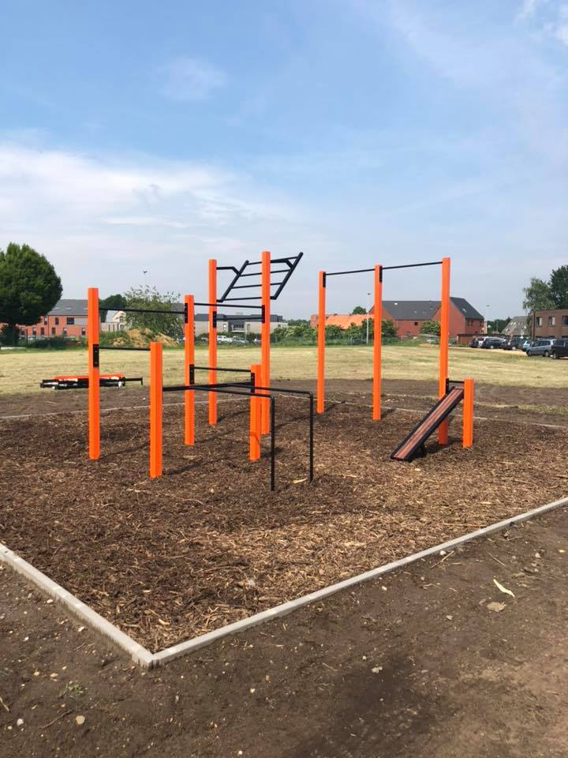

Calisthenics
Calisthenics zjn oefeningen die bestaan uit een verscheidenheid aan grove motorische bewegingen - rennen, staan, grijpen, duwen, enz. - vaak ritmisch en met minimale uitrusting, dus in wezen lichaamsoefeningen.
Weetjes
Urban calisthenics zijn een vorm van straattraining; calisthenics-groepen voeren oefeningsroutines uit in stedelijke gebieden. Individuen en groepen trainen om geavanceerde vaardigheden op het gebied van calisthenics, zoals muscle-ups, barspins en zowel voor- als achterhendels, te kunnen uitvoeren.